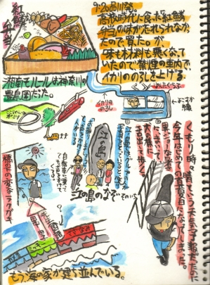

神奈川かまくら篇  高校時代。学校さぼっては良く鎌倉に遊びに行った。学校さぼって友達の家でシンナーなら不良だが、学校サボって寺見に行ってた私って一体何だったのか・・・。 昔食べた紅鱗弁当には小さな大福が付いていてそれがとってもお気に入りでした。 ＮＥＸＴ・・・
神奈川かまくら篇

高校時代。学校さぼっては良く鎌倉に遊びに行った。学校さぼって友達の家でシンナーなら不良だが、学校サボって寺見に行ってた私って一体何だったのか・・・。 昔食べた紅鱗弁当には小さな大福が付いていてそれがとってもお気に入りでした。